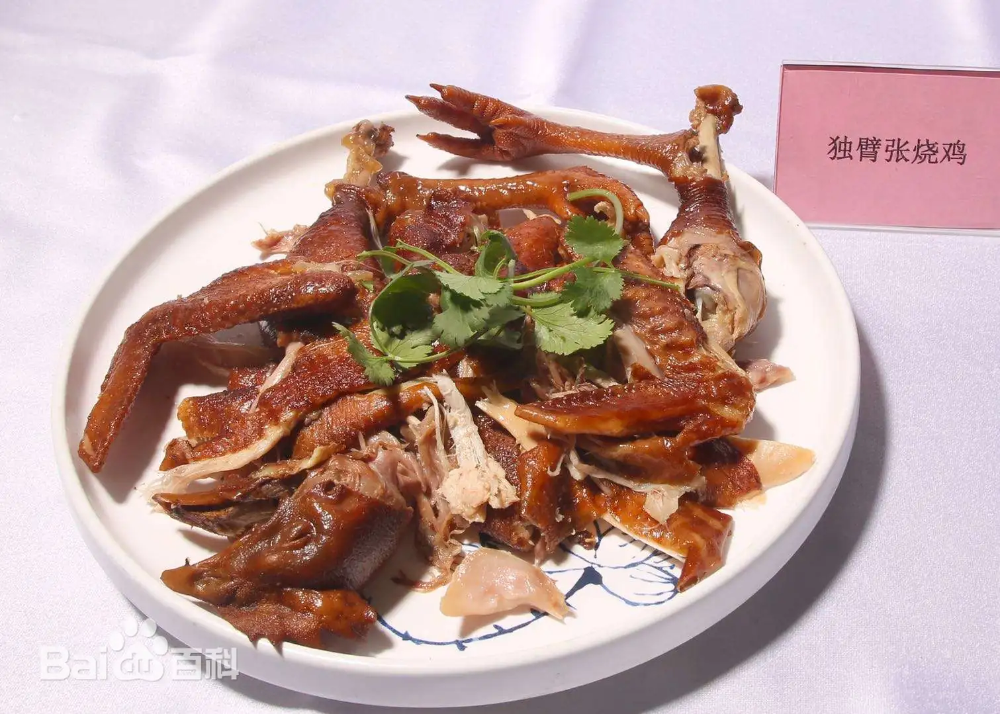

平舆美食 - 舌尖上的家乡味
融合传统工艺与地方特色，每一道美食都承载着平舆人的记忆与情怀
特色主食

芝麻叶面条
平舆特色主食，选用本地白芝麻的叶子，经晾晒、蒸煮、腌制后，与手工面条同煮。面条筋道爽滑，芝麻叶香气浓郁，搭配葱花、蒜末、香油等调料，味道鲜香可口，是平舆人日常餐桌上的必备美食，承载着一代人的童年记忆。
传统卤味

独臂张烧鸡
平舆百年老字号卤味，始于清代。选用本地散养土鸡，经宰杀、清洗、腌制后，加入八角、桂皮、香叶等数十种香料，用老汤慢火卤制数小时。烧鸡色泽红亮，肉质鲜嫩，肥而不腻，香味扑鼻，是逢年过节、走亲访友的佳品。
传统糕点

白芝麻酥
以平舆优质白芝麻为主要原料，搭配麦芽糖、冰糖等调料，经熬制、搅拌、压模、切块等多道工序制成。成品色泽金黄，口感酥脆香甜，入口即化，芝麻香气浓郁，不含添加剂，是纯天然的传统糕点，深受老人和孩子喜爱。
健康食材

平舆食用菌
平舆气候适宜，盛产香菇、金针菇、杏鲍菇等食用菌。采用大棚种植，无污染、无农药残留，肉质肥厚，口感鲜嫩，营养丰富，富含蛋白质、膳食纤维等营养成分。可炒、可炖、可涮，做法多样，是健康饮食的理想食材。
特色卤味

位公辣半蹄
平舆特色卤味小吃，选用猪前蹄，经去毛、清洗、焯水后，加入辣椒、花椒、八角等调料，用老汤卤制而成。成品色泽红亮，肉质软糯，辣而不燥，香而不腻，啃起来回味无穷。是街头巷尾的热门小吃，也是下酒的绝佳搭配。